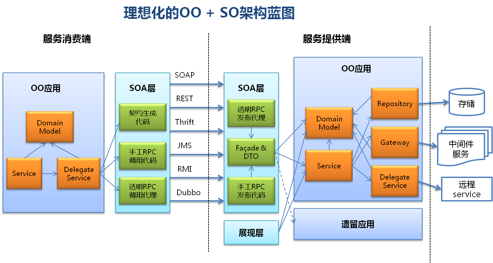

微观SOA：服务设计原则及其实践方式（下篇）

在上一篇文章中，我说到SOA是一个特别大的话题，不但没有绝对统一的原则，而且很多原则本身的内容也具备相当模糊性和宽泛性。虽然我们可以说SOA ≈ 模块化开发 + 分布式计算，但由于其原则的模糊性，我们仍然很难说什么应用是绝对符合SOA的，只能识别出哪些是不符合SOA的。
本篇将对8种可操作的服务设计原则进行细化的分析，作为SOA实践的参考。
服务设计原则1：优化远程调用
这里的远程调用特指RPC（Remote Procedure Call）。当然更面向对象的说法应该是远程方法调用或者远程服务调用等等。

由于SO接口通常要被远程访问，而网络传输，对象序列化/反序列化等开销都远远超过本地Object访问几个数量级，所以要加快系统的响应速度、减少带宽占用和提高吞吐量，选择高性能的远程调用方式经常是很重要的。
但是远程调用方式往往又要受限于具体的业务和部署环境，比如内网、外网、同构平台、异构平台等等。有时还要考虑它对诸如分布式事务，消息级别签名/加密，可靠异步传输等方面的支持程度（这些方面通常被称为SLA：service level agreement），甚至还包括开发者的熟悉和接受程度等等。
因此，远程调用方式往往需要根据具体情况做出选择和权衡。
以Java远程Service为例分析不同场景下，传输方式的某些可能较好选择：
- 内网 + 同框架Java客户端 + 大并发：多路复用的TCP长连接 + kryo （二进制序列化） （kryo也可以用Protostuff，FST等代替）
- 内网 + 不同框架Java客户端：TCP + Kryo
- 内网 + Java客户端 + 2PC分布式事务：RMI/IIOP （TCP + 二进制）
- 内网 + Java客户端 + 可靠异步调用：JMS + Kryo （TCP + 二进制）
- 内网 + 不同语言客户端：thrift（TCP + 二进制序列化）
- 外网 + 不同语言客户端 + 企业级特性：HTTP + WSDL + SOAP （文本）
- 外网 + 兼顾浏览器、手机等客户端：HTTP + JSON （文本）
- 外网 + 不同语言客户端 + 高性能：HTTP + ProtocolBuffer （二进制）
简单来说，从性能上讲，tcp协议 + 二进制序列化更适合内网应用。从兼容性、简单性上来说，http协议 + 文本序列化更适合外网应用。当然这并不是绝对的。另外，tcp协议在这里并不是限定远程调用协议一定只能是位于OSI网络模型的第四层的原始tcp，它可以包含tcp之上的任何非http协议。
所以，回答上面提到的问题，WebServices （经典的WSDL+SOAP+HTTP）虽然是最符合前述SOA设计原则的技术，但并不等同于SOA，我认为它只是满足了SOA的底线，而未必是某个具体场景下的最佳选择。这正如一个十项全能选手在每个单项上是很难和单项冠军去竞争的。更理想的SOA Service最好能在可以支持WebServices的同时，支持多种远程调用方式，适应不同场景，这也是Spring Remoting，SCA，Dubbo，Finagle等分布式服务框架的设计原则。
远程调用技术解释：HTTP + JSON适合SOA吗？
JSON简单易读，通用性极佳，甚至能很好支持浏览器客户端，同时也常被手机APP使用，大有取代XML之势。
但JSON本身缺乏像XML那样被广泛接受的标准schema，而一般的HTTP + JSON的远程调用方式也缺乏像Thrift，CORBA，WebServices等等那样标准IDL（接口定义语言），导致服务端和客户端之间不能形成强的服务契约，也就不能做比如自动代码生成。所以HTTP + JSON在降低了学习门槛的同时，可能显著的增加复杂应用的开发工作量和出错可能性。
例如，新浪微博提供了基于HTTP + JSON的Open API，但由于业务操作比较复杂，又在JSON上封装实现了各种语言的客户端类库，来减少用户的工作量。
为了解决这方面的问题，业界有很多不同方案来为HTTP + JSON补充添加IDL，如RSDL、JSON-WSP、WADL、WSDL 2.0等等，但事实上它们的接受度都不太理想。
另外值得一提的是，JSON格式和XML一样有冗余，即使做GZIP压缩之类的优化，传输效率通常也不如很多二进制格式，同时压缩、解压还会引入额外的性能开销。
远程调用技术解释：Apache Thrift多语言服务框架
Thrift是最初来自facebook的一套跨语言的service开发框架，支持C++, Java, Python, PHP, Ruby, Erlang, Perl, Haskell, C#, JavaScript, Node.js, Smalltalk, Delphi等几乎所有主流编程语言，具有极好的通用性。
Thrift被facebook，twitter等巨头以及开源社区都广泛使用，是非常成熟的技术。
Thrift的服务契约通过类似如下形式的IDL定义：
struct User {
1: i32 id,
2: string name,
3: string password
}
service UserService {
void store(1: User user),
UserProfile retrieve(1: i32 id)
}
非常类似于C语言，易读易写，比WSDL简单明了得多。比用java之类的编程语言也更方便，有时候可以把所有相关的接口和数据结构定义放到同一个文件，发布出去的时候不用再打一个压缩包之类，甚至可以直接粘贴到文档中
Thrift还提供工具，可以基于IDL自动生成各种语言对应的服务端和客户端代码：
[lishen@dangdang thrift]thrift --gen java user.thrift [lishen@dangdang thrift]$ thrift --gen cpp user.thrift [lishen@dangdang thrift]$ thrift --gen php user.thrift [lishen@dangdang thrift]$ thrift --gen csharp user.thrift
我认为thrift是比WebServices更简单高效的技术，是在SOA中对WebServices最具有替代性的技术之一。
远程调用技术解释：多路复用的TCP长连接
这是一种追求极致高性能高伸缩的方式，这里只做简要介绍。
比较典型的是twitter的Mux RPC协议以及google的SPDY协议，在其中多个请求同时共用同一个长连接，即一个连接交替传输不同请求的字节块。它既避免了反复建立连接开销，也避免了连接的等待闲置从而减少了系统连接总数，同时还避免了TCP顺序传输中的线头阻塞（head-of-line blocking）问题。
另外，国内比较著名的开源dubbo框架的默认RPC协议，以及业界许多小型开源RPC框架也都是类似的思路。
采用多路复用机制后，一般就要求服务器端和客户端都支持额外的类似于会话层（即OSI网络模型第六层）的语义，导致它们必须要依赖于同一套RPC框架。
其他很多RPC机制都是使用TCP短连接。即使有些RPC使用了长连接，但一个连接同一时间只能发送一个请求，然后连接就处于闲置状态，来等待接收该请求的响应，待响应完毕，该连接才能被释放或者复用。
HTTP 1.1也支持一种基于pipeline模式的长连接，其中多个HTTP请求也可共用一个连接，但它要求响应（response）也必须按照请求（request）的顺序传输返回，即FIFO先进先出。而在完全多路复用的连接中，哪个的响应先ready就可以先传输哪个，不用排队。
当然，短连接、长连接和多路复用长连接之间不存在绝对的好坏，需要取决于具体业务和技术场景，在此不详细展开了。
远程调用技术解释：Java高效序列化
最近几年，各种新的Java高效序列化方式层出不穷，不断刷新序列化性能的上限，例如Kryo，FST等开源框架。它们提供了非常高效的Java对象的序列化和反序列化实现，相比JDK标准的序列化方式（即基于Serializable接口的标准序列化，暂不考虑用诸如Externalizable接口的定制序列化），在典型场景中，其序列化时间开销可能缩短20倍以上，生成二进制字节码的大小可能缩减4倍以上。
另外，这些高效Java序列化方式的开销也显著少于跨语言的序列化方式如thrift的二进制序列化，或者JSON等等
远程调用技术解释：RMI/IIOP和分布式事务
RMI/IIOP是Java EE中标准的远程调用方式，IIOP是CORBA的协议，只有IIOP上的RMI才支持两阶段提交的分布式事务，同时提供和CORBA的互操作。
当然，严格的两阶段提交事务并不高效，还可能严重影响系统伸缩性甚至可用性等等，一般只应用在非常关键的业务中。
远程调用技术解释：Google ProtocolBuffer跨语言序列化
ProtocolBuffer是google开发的跨语言的高效二进制序列化方式，其序列化性能和thrift比较类似。事实上thrift最初就是ProtocolBuffer的仿制品。但它和thrift最大的不同是他没有自带的RPC实现（因为google没有将RPC部分开源，但有大量第三方实现）。
由于不和RPC方式耦合，反而使得ProtocolBuffer能被方便的集成进大量已有的系统和框架中。在国内它也被百度、淘宝等广泛的应用在Open API中，和HTTP搭配作为一种高效的跨平台跨组织的集成方式。
服务设计原则2：消除冗余数据
同样由于service的远程调用开销很高，所以在它的输入参数和返回结果中，还要尽量避免携带当前业务用例不需要的冗余的字段，来减少序列化和传输的开销。同时，去掉冗余字段也可以简化接口，避免给外部用户带来不必要的业务困惑。
比如article service中有个返回article list的方法
List<Article> getArticles(...)
如果业务需求仅仅是要列出文章的标题，那么在返回的article中就要避免携带它的contents等等字段。
这里经典解决方案就是引入OO中常用的Data Transfer Object (DTO)模式，专门针对特定service的用例来定制要传输的数据字段。这里就是添加一个AriticleSummary的额外数据传输对象：
List<ArticleSummary> getArticleSummaries(...)
额外的DTO确实是个麻烦，而一般OO程序通常则可直接返回自己的包含冗余的业务模型。
服务设计原则3：粗粒度契约
同样由于远程调用开销高，同时service的外部使用者对特定业务流程的了解也比不上组织内部的人，所以service的契约（接口）通常需要是粗粒度的，其中的一个操作就可能对应到一个完整的业务用例或者业务流程，这样既能减少远程调用次数，同时又降低学习成本和耦合度。
而OO接口通常可以是非常细粒度的，提供最好的灵活性和重用性。
例如，article service支持批量删除文章，OO接口中可以提供
deleteArticle(long id)
供用户自己做循环调用（暂不考虑后端SQL之类优化），但SO接口中，则最好提供
deleteArticles(Set<Long> ids)
供客户端调用，将可能的N次远程调用减少为一次。
例如，下订单的用例，要有一系列操作
addItem -> addTax -> calculateTotalPrice -> placeOrder
OO中我们完全可以让用户自己来灵活选择，分别调用这些细粒度的可复用的方法。但在SO中，我们需要将他们封装到一个粗粒度的方法供用户做一次性远程调用，同时也隐藏了内部业务的很多复杂性。另外，客户端也从依赖4个方法变成了依赖1个方法，从而大大降低了程序耦合度。
顺便值得一提的是，如果上面订单用例中每个操作本身也是远程的service（通常在内网之中），这种粗粒度封装就变成了经典的service composition（服务组合）甚至service orchestration（服务编排）了。这种情况下粗粒度service同样可能提高了性能，因为对外网客户来说，多次跨网的远程调用变成了一次跨网调用 + 多次内网调用。
对这种粗粒度service封装和组合，经典解决方案就是引入OO中常用的Facade模式，将原来的对象屏蔽到专门的“外观”接口之后。同时，这里也很可能要求我们引入新的service参数/返回值的数据结构来组合原来多个操作的对象模型，这就同样用到前述的DTO模式。
一个简单Facade示例（FooService和BarService是两个假想的本地OO service，façade将它们的结果值组合返回）：
class FooBarFacadeImpl implements FooBarFacade {
private FooService fooService;
private BarService barService;
public FooBarDto getFooBar() {
FooBarDto fb = new FooBarDto();
fb.setFoo(fooService.getFoo());
fb.setBar(barService.getBar());
return fb;
}
}
当然，有的时候也可以不用facade和DTO，而在是FooService和BarService之外添加另一个本地service和domain model，这要和具体业务场景有关。
服务设计原则4：通用契约
由于service不假设用户的范围，所以一般要支持不同语言和平台的客户端。但各种语言和平台在功能丰富性上有很大差异，这就决定了服务契约必须取常见语言、平台以及序列化方式的最大公约数，才能保证service广泛兼容性。由此，服务契约中不能有某些语言才具备的高级特性，参数和返回值也必须是被广泛支持的较简单的数据类型（比如不能有对象循环引用）。
如果原有的OO接口不能满足以上要求，则在此我们同样需要上述的Facade和DTO，将OO接口转换为通用的SO契约。
例如原有对象模型
class Foo {
private Pattern regex;
}
Pattern是Java特有的预编译好的，可序列化的正则表达式（可提高性能），但在没有特定框架支持下，可能不好直接被其他语言识别，所以可添加DTO：
class FooDto {
private String regex;
}
服务设计原则5：隔离变化
虽然OO和SO都追求低耦合，但SO由于使用者范围极广，就要求了更高程度的低耦合性。
比如前述的article service，OO中可以直接返回article对象，而这个article对象在OO程序内部可能做为核心的建模的domain model，甚至作为O/R mapping等等。而在SO如果还直接返回这个article，即使没有前面所说的冗余字段，复杂类型等问题，也可能让外部用户与内部系统的核心对象模型，甚至O/R mapping机制，数据表结构等等产生了一定关联度，这样一来，内部的重构经常都会可能影响到外部的用户。
所以，这里再次对Facade和DTO产生了需求，用它们作为中介者和缓冲带，隔离内外系统，把内部系统变化对外部的冲击减少到最小程度。
服务设计原则6：契约先行
Service是往往涉及不同组织之间的合作，而按照正常逻辑，两个组织之间合作的首要任务，就是先签订明确的契约，详细规定双方合作的内容，合作的形式等等，这样才能对双方形成强有力的约束和保障，同时大家的工作也能够并行不悖，不用相互等待。因此SOA中，最佳的实践方式也是契约先行，即先做契约的设计，可以有商务，管理和技术等不同方面的人员共同参与，并定义出相应的WSDL或者IDL，然后在开发的时候再通过工具自动生成目标语言的对应代码。
对于WSDL来说，做契约先行的门槛略高，如果没有好的XML工具很难手工编制。但对于Thrift IDL或者ProtocolBuffer等来说，由于它们和普通编程语言类似，所以契约设计相对是比较容易的。另外，对于简单的HTTP + JSON来说（假设不补充使用其他描述语言），由于JSON没有标准的schema，所以是没法设计具有强约束力的契约的，只能用另外的文档做描述或者用JSON做输入输出的举例。
但是，契约先行，然后再生成服务提供端的代码，毕竟给service开发工作带来了较大的不便，特别是修改契约的时候导致代码需要重写。因此，这里同样可能需要引入Facade和DTO，即用契约产生的都是Facade和DTO代码，它们负责将请求适配和转发到其他内部程序，而内部程序则可以保持自己的主导性和稳定性。
另外，契约先行可能会给前面提到的多远程调用支持带来一些麻烦。
当然契约先行也许并不是能被广泛接受的实践方式，就像敏捷开发中“测试先行”（也就是测试驱动开发）通常都是最佳实践，但真正施行的团队却非常之少，这方面还需要不断摸索和总结。但我们至少可以认为Echo中Java2WSDL并不被认为是SOA的最佳实践。
服务设计原则7：稳定和兼容的契约
由于用户范围的广泛性，所以SO的服务契约和Java标准API类似，在公开发布之后就要保证相当的稳定性，不能随便被重构，即使升级也要考虑尽可能的向下兼容性。同时，如果用契约先行的方式，以后频繁更改契约也导致开发人员要不断重做契约到目标语言映射，非常麻烦。
这就是说SO对契约的质量要求可能大大高于一般的OO接口，理想的情况下，甚至可能需要专人（包括商务人员）来设计和评估SO契约（不管是否用契约先行的方式），而把内部的程序实现交给不同的人，而两者用Facade和DTO做桥梁。
服务设计原则8：契约包装
前述原则基本都是针对service提供端来讲的，而对service消费端而言，通过契约生成对应的客户端代码，经常就可以直接使用了。当然，如果契约本身就是Java接口之类（比如在Dubbo，Spring Remoting等框架中），可以略过代码生成的步骤。
但是，service的返回值（DTO）和service接口（Facade），可能被消费端的程序到处引用到。
这样消费端程序就较强的耦合在服务契约上了，如果服务契约不是消费端定义的，消费端就等于把自己程序的部分主导权完全让渡给了别人。
一旦契约做更改，或者消费端要选择完全不同的service提供方（有不同的契约），甚至改由本地程序自己来实现相关功能，修改工作量就可能非常大了。
另外，通过契约生成的客户端代码，经常和特定传输方式是相关的（比如webservices stub），这样给切换远程调用方式也会带来障碍。
因此，就像在通常应用中，我们要包装数据访问逻辑（OO中的DAO或者Repository模式），或者包装基础服务访问逻辑（OO中的Gateway模式）一样，在较理想的SOA设计中，我们也可以考虑包装远程service访问逻辑，由于没有恰当的名称，暂时称之为Delegate Service模式，它由消费端自己主导定义接口和参数类型，并将调用转发给真正的service客户端生成代码，从而对它的使用者完全屏蔽了服务契约，这些使用者甚至不知道这个服务到底是远程提供的的还是本地提供的。
此外，即使我们在消费端是采用某些手工调用机制（如直接构建和解析json等内容，直接收发JMS消息等等），我们同样可以用delegate service来包装相应的逻辑。
delegate service示例1：
// ArticlesService是消费端自定义的接口
class ArticleServiceDelegate implements ArticlesService {
// 假设是某种自动生成的service客户端stub类
private ArticleFacadeStub stub;
public void deleteArticles(List<Long> ids) {
stub.deleteArticles(ids);
}
}
delegate service示例2：
// ArticlesService是消费端自定义的接口
class ArticleServiceDelegate implements ArticlesService {
public void deleteArticles(List<Long> ids) {
// 用JMS和FastJson手工调用远程service
messageClient.sendMessage(queue, JSON.toJSONString(ids));
}
}
从面向对象到面向服务，再从面向服务到面向对象
总结上面的几个原则，虽然只是谈及有限的几个方面，但大致也可看出OO和SO在实际的设计开发中还是有不少显著的不同之处，而且我们没有打算用SO的原则来取代过去的OO设计，而是引入额外的层次、对象和OO设计模式，来补充传统的OO设计。
其实就是形成了这种调用流程：
-
service提供端：OO程序 <- SOA层（Facade和DTO）<- 远程消费端
-
service消费端：OO程序 -> Delegate Service -> SOA层（Facade和DTO 或者 其他动态调用机制）-> 远程提供端
Facade、DTO和Delegate Service负责做OO到SO和SO到OO的中间转换。
现在，可以回答Echo示例中的问题：通过“透明的”配置方式，将OO程序发布为远程Service，虽然可能较好的完成了从本地对象到远程对象的跨越，但通常并不能较好的完成OO到SO的真正跨越。
同时，透明配置方式也通常无法直接帮助遗留应用（如ERP等）转向SOA。
当然，在较为简单和使用范围确定很有限应用（比如传统和局部的RPC）中，透明式远程service发布会带来极大的便利。
另外，上面对SO的所有讨论都集中在RPC的方式，其实SO中也用message的方式做集成，它也是个大话题，暂时不在此详论了。
为什么不能放弃面向对象？
SO是有它的特定场景的，比如远程的，范围不定的客户端。所以它的那些设计原则并不能被借用来指导一般性的程序开发，比如很多OO程序和SO原则完全相反，经常都要提供细粒度接口和复杂参数类型以追求使用的使用灵活性和功能的强大性。
就具体架构而言，我认为SOA层应该是一个很薄的层次（thin layer），将OO应用或者其他遗留性应用加以包装和适配以帮助它们面向服务。其实在通常的web开发中，我们也是用一个薄的展现层（或者叫Web UI层之类）来包装OO应用，以帮助它们面向浏览器用户。因此，Façade、DTO等不会取代OO应用中核心的Domain Model、Service等等 （这里的service是OO中service，未必是SO的）。
综合起来，形成类似下面的体系结构：

理想和现实
需要特别指出的是，上面提到的诸多SO设计原则是在追求一种相对理想化的设计，以达到架构的优雅性，高效性，可重用性，可维护性，可扩展性等等。
而在现实中任何理论和原则都可能是需要作出适当妥协的，因为现实是千差万别的，其情况远比理论复杂，很难存在放之四海而皆准的真理。
而且很多方面似乎本来也没有必要追求完美和极致，比如如果有足够能力扩充硬件基础设施，就可以考虑传输一些冗余数据，选择最简单传输方式，并多来几次远程调用等等，以减轻设计开发的工作量。
那么理想化的原则就没有意义了吗？比如领域驱动设计（Domain-Driven Design）被广泛认为是最理想的OO设计方式，但极少有项目能完全采用它；测试驱动开发也被认为是最佳的敏捷开发方式，但同样极少有团队能彻底采用它。但是，恐怕没有多少人在了解它们之后会否认它们巨大的意义。
理想化的原则可以更好的帮助人们理解某类问题的本质，并做为好的出发点或者标杆，帮助那些可以灵活运用，恰当取舍的人取得更大的成绩，应付关键的挑战。这正如孔子说的“取乎其上，得乎其中；取乎其中，得乎其下；取乎其下，则无所得矣”。
另外，值得一提的是，SOA从它的理念本身来说，就带有一些的理想主义的倾向，比如向“全世界”开放，不限定客户端等等。如果真愿意按SOA的路径走，即使你是个土豪，偷个懒比浪费网络带宽重要，但说不定你的很多用户是土鳖公司，浪费几倍的带宽就大大的影响他们的利润率。
延伸讨论：SOA和敏捷软件开发矛盾吗？
SOA的服务契约要求相当的稳定性，一旦公开发布（或者双方合同商定）就不应该有经常的变更，它需要对很多方面有极高的预判。而敏捷软件开发则是拥抱变化，持续重构的。软件设计大师Martin Fowler把它们归结为计划式设计和演进式设计的不同。
计划理论（或者叫建构理论）和演进理论是近代哲学的两股思潮，影响深远，派生出了比如计划经济和市场经济，社会主义和自由主义等等各种理论。
但是，计划式设计和演进式设计并不绝对矛盾，就像计划经济和市场经济也不绝对矛盾，非此即彼，这方面需要在实践中不断摸索。前面我们讨论的设计原则和架构体系，就是将SOA层和OO应用相对隔离，分而治之，在SOA层需要更多计划式设计，而OO应用可以相对独立的演进，从而在一定程度缓解SOA和敏捷开发的矛盾。
延伸讨论：SOA和REST是一回事吗？
从最本质的意义上讲，REST（Representational State Transfer）实际是一种面向资源架构（ROA），和面向服务架构（SOA）是有根本区别的。
例如，REST是基于HTTP协议，对特定资源做增（HTTP POST）、删（HTTP DELETE）、改（HTTP PUT）、查（HTTP GET）等操作，类似于SQL中针对数据表的INSERT、DELETE、UPDATE、SELECT操作，故REST是以资源（资源可以类比为数据）为中心的。而SOA中的service通常不包含这种针对资源（数据）的细粒度操作，而是面向业务用例、业务流程的粗粒度操作，所以SOA是以业务逻辑为中心的。
但是在实际使用中，随着许多REST基本原则被不断突破，REST的概念被大大的泛化了，它往往成为很多基于HTTP的轻量级远程调用的代名词（例如前面提到过的HTTP + JSON）。比如，即使是著名的Twitter REST API也违反不少原始REST的基本原则。
在这个泛化的意义上讲，REST也可以说是有助于实现SOA的一种轻量级远程调用方式。
SOA架构的进化
前面讨论的SOA的所有问题，基本都集中在service本身的设计开发。但SOA要真正发挥最大作用，还需要不断演进成更大的架构（也就是从微观SOA过渡到宏观SOA），在此略作说明：
-
第一个层次是service架构：开发各种独立的service并满足前面的一些设计原则，我们前面基本都集中在讨论这种架构。这些独立的service有点类似于小孩的积木。
-
第二个层次是service composition（组合）架构：独立的service通过不同组合来构成新的业务或者新的service。在理想情况下，可以用一种类似小孩搭积木的方式，充分发挥想象力，将独立的积木（service）灵活的拼装组合成新的形态，还能够自由的替换其中的某个构件。这体现出SOA高度便捷的重用性，大大提高企业的业务敏捷度。
-
第三个层次是service inventory（清单）架构：通过标准化企业服务清单（或者叫注册中心）统一的组织和规划service的复用和组合。当积木越来越多了，如果还满地乱放而没有良好的归类整理，显然就玩不转了。
-
第四个层次是service-oriented enterprise架构……
总结
至此，我们只是简要的探讨了微观层面的SOA，特别是一些基本设计原则及其实践方式，以期能够略微展示SOA在实践中的本质，以有助于SOA更好的落地，进入日常操作层面。
最后，打个比方：SOA不分贵贱（不分语言、平台、组织），不远万里（通过远程调用）的提供服务（service），这要求的就是一种全心全意为人民服务的精神……
作者简介
沈理，当当网架构师和技术委员会成员，主要负责当当网的SOA实施（即服务化）以及分布式服务框架的开发。以前也有在BEA、Oracle、Redhat等外企的长期工作经历，从事过多个不同SOA相关框架和容器的开发。他的邮箱：shenli@dangdang.com
感谢马国耀对本文的审校。
给InfoQ中文站投稿或者参与内容翻译工作，请邮件至editors@cn.infoq.com。也欢迎大家通过新浪微博（@InfoQ）或者腾讯微博（@InfoQ）关注我们，并与我们的编辑和其他读者朋友交流。
微观SOA的服务设计和原则总结的很好!
2014年10月11日 10:31
by
guo jinfei
微观SOA的服务设计和原则总结的很好!
2014年10月11日 10:31
by
guo jinfei
微观SOA的服务设计和原则总结的很好!
2014年10月11日 10:31
by
guo jinfei
微观SOA的服务设计和原则总结的很好!
2014年10月11日 10:31
by
guo jinfei
微观SOA的服务设计和原则总结的很好!
2014年10月11日 10:31
by
guo jinfei
微观SOA的服务设计和原则总结的很好!
2014年10月11日 10:31
by
guo jinfei
Re: 微观SOA的服务设计和原则总结的很好!
2014年10月12日 01:27
by
沈 理
上面那些层次的名字也是从维基百科看来的，其实就我个人来讲，我都不是非常确定在*具体的*设计和开发中，有没有太大的意义去明确的区分比如原子服务（好像也叫基本服务之类）和组合服务，并把它归入不同架构层次。
比如程序开发中一个对象要调用其他对象来协作，基本就是天经地义的事情，是除了helloworld式应用外都会自然去做的。同样开发远程服务会用到其他远程服务，也比较自然和基本的吧，特别是在所谓微服务架构中？另外，尤其是在服务的客户看来，一个服务是原子服务还是组合服务也是完全不知道的和没有区别的，如果客户还明确知道这是一个组合服务，那我觉得反而违背了基本的抽象和封装原则。
所以，我觉得无需SOA的概念，从OO设计的基本理念出发，比如单一职责原则和strategy模式，我自然就会把可复用和单一内聚的业务逻辑放入到原子服务中，然后在所谓组合服务中把部分逻辑委托给原子服务去实现。只是在OO中各种单一复用逻辑基本都可以拆分出来，而在分布式环境中，由于调用开销大，有些逻辑就不是适合拆分成远程服务，比如，我个人一直觉得所谓data service之类*通常*就不太好，因为data service差不多等于是把DAO和repository之类变成了远程服务。当然如果是某些基础PAAS平台可能不在此考虑中。
Re: 大赞
2014年10月12日 01:37
by
沈 理
前文中也有大量谬误，只当是抛砖引玉。比如OO+SO架构图中就把domain model和service错画成了两个组件，其实我印象中在一般的领域驱动设计中，domain model包括了service，图中的domain model原意实际上是指entity，VO一类的对象
Re: 整体思路清晰
2014年10月14日 10:51
by
沈 理
总的来说，对于维基百科上定义的这几个架构层次的分类和进化，我个人觉得是相对传统的，还有一点偏学院派的。我不觉得在具体实践中有*特别*大的指导价值。
其实不同类型企业的服务架构进化可能也有很多显著的不同吧，比如常说的服务治理，传统企业的信息化中可能是更着重于服务注册管理、服务监控、服务权限控制等等，而面临高并发的大型互联网企业还尤其需要服务路由分流，服务流量控制，服务降级等等。这方面我没有多少发言权，还是BAT等等大公司的人有经验。另外京东王晓钟先生网上有个交易架构ppt，京东的吴博先生在infoq上也有个讲座，我觉得都很有启发。
所以我个人的看法是，服务架构进化是个比较复杂的东西，未必有简单统一的路线图，再加上服务架构越走向宏观层次，技术的比重可能就越低，业务、管理等等的比重可能就越高，就更难简单概括，而且说起来也比较容易走向务虚，我目前也不具备这个融会贯通的能力，就不敢班门弄斧了。
深度内容


InfoQ每周精要
通过个性化定制的新闻邮件、RSS Feeds和InfoQ业界邮件通知，保持您对感兴趣的社区内容的时刻关注。


您好，朋友！
您需要 注册一个InfoQ账号 或者 登录 才能进行评论。在您完成注册后还需要进行一些设置。获得来自InfoQ的更多体验。
告诉我们您的想法